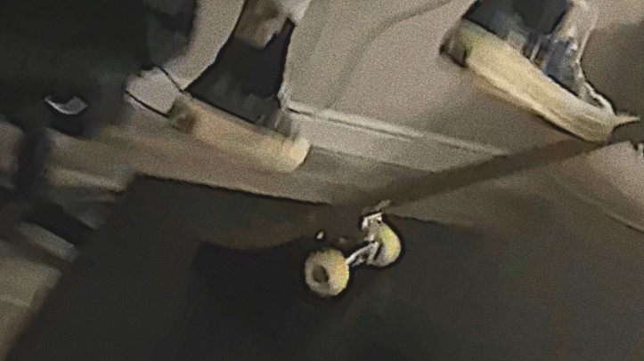

Ollie On Table

I'm heading back to Colorado tomorrow after being down in Santa Barbara over the weekend for the festival there. I will be making October plans once there and will try to arrange so
I'm back here for the birthday if possible. I'll let you know as soon as I know the doctor's appointment schedule and my flight plans."Explain to me again why I shouldn't cheat?"
he asked. "All the others do and nobody ever gets punished for doing so. I should go about being happy losing to cheaters because I know that I don't? That's what you're telling me?"
I'm heading back to Colorado tomorrow after being down in Santa Barbara over the weekend for the festival there. I will be making October plans once there and will try to arrange so
I'm back here for the birthday if possible. I'll let you know as soon as I know the doctor's appointment schedule and my flight plans."Explain to me again why I shouldn't cheat?"
he asked. "All the others do and nobody ever gets punished for doing so. I should go about being happy losing to cheaters because I know that I don't? That's what you're telling me?"
By Uorma Seir
Belfast Traffic Lights
The red glint of paint sparkled under the sun. He had dreamed of owning this car since he was ten, and that dream had become a reality less than a year ago. It was his baby and he
spent hours caring for it, pampering it, and fondling over it. She knew this all too well, and that's exactly why she had taken a sludge hammer to it.She didn't like the food. She
never did. She made the usual complaints and started the tantrum he knew was coming. But this time was different. Instead of trying to placate her and her unreasonable demands, he
just stared at her and watched her meltdown without saying a word.The red glint of paint sparkled under the sun. He had dreamed of owning this car since he was ten, and that dream had
become a reality less than a year ago. It was his baby and he spent hours caring for it, pampering it, and fondling over it. She knew this all too well, and that's exactly why she had
taken a sludge hammer to it.She didn't like the food. She never did. She made the usual complaints and started the tantrum he knew was coming. But this time was different. Instead of
trying to placate her and her unreasonable demands, he just stared at her and watched her meltdown without saying a word.
By Sosumi Hawasaki